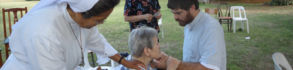
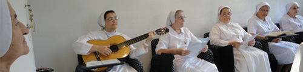
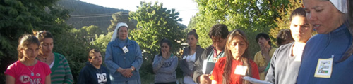

-

-

-

-

-

- 
- 
- 

EL ADVIENTO
Lectura
- El Adviento, preparación para la Navidad
- Orar con la Corona de Adviento
- Celebraciones del Adviento
- Guiones de Misa
El Adviento, preparación para la Navidad
Tiempo para prepararse y estar en gracia para vivir correctamente la Navidad.
(Fuente: Catholic.net)
Significado del Adviento:
La palabra latina "adventus" significa “venida”. En el lenguaje cristiano se refiere a la venida de Jesucristo. La liturgia de la Iglesia da el nombre de Adviento a las cuatro semanas que preceden a la Navidad, como una oportunidad para prepararnos en la esperanza y en el arrepentimiento para la llegada del Señor.
El color litúrgico de este tiempo es el morado que significa penitencia.
El tiempo de Adviento es un período privilegiado para los cristianos ya que nos invita a recordar el pasado, nos impulsa a vivir el presente y a preparar el futuro.
Esta es su triple finalidad:
- Recordar el pasado: Celebrar y contemplar el nacimiento de Jesús en Belén. El Señor ya vino y nació en Belén. Esta fue su venida en la carne, lleno de humildad y pobreza. Vino como uno de nosotros, hombre entre los hombres. Esta fue su primera venida.
- Vivir el presente: Se trata de vivir en el presente de nuestra vida diaria la "presencia de Jesucristo" en nosotros y, por nosotros, en el mundo. Vivir siempre vigilantes, caminando por los caminos del Señor, en la justicia y en el amor.
- Preparar el futuro: Se trata de prepararnos para la Parusía o segunda venida de Jesucristo en la "majestad de su gloria". Entonces vendrá como Señor y como Juez de todas las naciones, y premiará con el Cielo a los que han creído en Él; vivido como hijos fieles del Padre y hermanos buenos de los demás. Esperamos su venida gloriosa que nos traerá la salvación y la vida eterna sin sufrimientos.
En el Evangelio, varias veces nos habla Jesucristo de la Parusía y nos dice que nadie sabe el día ni la hora en la que sucederá. Por esta razón, la Iglesia nos invita en el Adviento a prepararnos para este momento a través de la revisión y la proyección:
- Revisión: Aprovechando este tiempo para pensar en qué tan buenos hemos sido hasta ahora y lo que vamos a hacer para ser mejores que antes. Es importante saber hacer un alto en la vida para reflexionar acerca de nuestra vida espiritual y nuestra relación con Dios y con el prójimo. Todos los días podemos y debemos ser mejores.
- Proyección: En Adviento debemos hacer un plan para que no sólo seamos buenos en Adviento sino siempre. Analizar qué es lo que más trabajo nos cuesta y hacer propósitos para evitar caer de nuevo en lo mismo.
Algo que no debes olvidar:
El adviento comprende las cuatro semanas antes de la Navidad.
El adviento es tiempo de preparación, esperanza y arrepentimiento de nuestros pecados para la llegada del Señor.
En el adviento nos preparamos para la navidad y la segunda venida de Cristo al mundo, cuando volverá como Rey de todo el Universo.
Es un tiempo en el que podemos revisar cómo ha sido nuestra vida espiritual, nuestra vida en relación con Dios y convertirnos de nuevo.
Es un tiempo en el que podemos hacer un plan de vida para mejorar como personas.
Cuida tu fe
Esta es una época del año en la que vamos a estar “bombardeados” por la publicidad para comprar todo tipo de cosas, vamos a estar invitados a muchas fiestas. Todo esto puede llegar a hacer que nos olvidemos del verdadero sentido del Adviento. Esforcémonos por vivir este tiempo litúrgico con profundidad, con el sentido cristiano. De esta forma viviremos la Navidad del Señor ocupados del Señor de la Navidad.
La Corona de Adviento (Fuente: Catholic.net)
La corona o guirnalda de Adviento es el primer anuncio de Navidad
La Corona de Adviento:
La palabra ADVIENTO es de origen latín y quiere decir VENIDA. Es el tiempo en que los cristianos nos preparamos para la venida de Jesucristo. El tiempo de adviento abarca cuatro semanas antes de Navidad.
Una costumbre significativa y de gran ayuda para vivir este tiempo es La corona o guirnalda de Adviento, es el primer anuncio de Navidad.
Origen:
La corona de adviento encuentra sus raíces en las costumbres pre-cristianas de los germanos (Alemania). Durante el frío y la oscuridad de diciembre, colectaban coronas de ramas verdes y encendían fuegos como señal de esperanza en la venida de la primavera. Pero la corona de adviento no representa una concesión al paganismo sino, al contrario, es un ejemplo de la cristianización de la cultura. Lo viejo ahora toma un nuevo y pleno contenido en Cristo. El vino para hacer todas las cosas nuevas.
Nueva realidad:
Los cristianos supieron apreciar la enseñanza de Jesús: Juan 8,12: «Yo soy la luz del mundo; el que me siga no caminará en la oscuridad, sino que tendrá la luz de la vida.». La luz que prendemos en la oscuridad del invierno nos recuerda a Cristo que vence la oscuridad. Nosotros, unidos a Jesús, también somos luz: Mateo 5,14 «Vosotros sois a luz del mundo. No puede ocultarse una ciudad situada en la cima de un monte."
En el siglo XVI católicos y protestantes alemanes utilizaban este símbolo para celebrar el adviento: Aquellas costumbres primitivas contenían una semilla de verdad que ahora podía expresar la verdad suprema: Jesús es la luz que ha venido, que está con nosotros y que vendrá con gloria. Las velas anticipan la venida de la luz en la Navidad: Jesucristo.
La corona de adviento se hace con follaje verde sobre el que se insertan cuatro velas. Tres velas son violeta, una es rosa.
El primer domingo de adviento encendemos la primera vela y cada domingo de adviento encendemos una vela mas hasta llegar a la Navidad. La vela rosa corresponde al tercer domingo y representa el gozo. Mientras se encienden las velas se hace una oración, utilizando algún pasaje de la Biblia y se entonan cantos. Esto lo hacemos en las misas de adviento y también es recomendable hacerlo en casa, por ejemplo antes o después de la cena. Si no hay velas de esos colores aun se puede hacer la corona ya que lo mas importante es el significado: la luz que aumenta con la proximidad del nacimiento de Jesús quien es la Luz del Mundo. La corona se puede llevar a la iglesia para ser bendecida por el sacerdote.
La corona de adviento encierra varios simbolismos:
La forma circular: El círculo no tiene principio ni fin. Es señal del amor de Dios que es eterno, sin principio y sin fin, y también de nuestro amor a Dios y al prójimo que nunca debe de terminar.
Las ramas verdes: Verde es el color de esperanza y vida. Dios quiere que esperemos su gracia, el perdón de los pecados y la gloria eterna al final de nuestras vidas. El anhelo más importante en nuestras vidas debe ser llegar a una unión más estrecha con Dios, nuestro Padre.
Las cuatro velas: Nos hacen pensar en la oscuridad provocada por el pecado que ciega al hombre y lo aleja de Dios. Después de la primera caída del hombre, Dios fue dando poco a poco una esperanza de salvación que iluminó todo el universo como las velas la corona. Así como las tinieblas se disipan con cada vela que encendemos, los siglos se fueron iluminando con la cada vez más cercana llegada de Cristo a nuestro mundo. Son cuatro velas las que se ponen en la corona y se prenden de una en una, durante los cuatro domingos de adviento al hacer la oración en familia.
Las manzanas rojas que adornan la corona: Representan los frutos del jardín del Edén con Adán y Eva que trajeron el pecado al mundo pero recibieron también la promesa del Salvador Universal.
El listón rojo: Representa nuestro amor a Dios y el amor de Dios que nos envuelve.
Bendición de la Corona de Adviento
En algunas parroquias o colegios se hace la bendición de las Coronas de Adviento. Si no se puede asistir a estas celebraciones, se puede hacer la bendición en familia con la siguiente oración:
Señor Dios, bendice con tu poder nuestra corona de adviento para que, al encenderla, despierte en nosotros el deseo de esperar la venida de Cristo practicando las buenas obras, y para que así, cuando Él llegue, seamos admitidos al Reino de los Cielos.
Te lo pedimos por Cristo nuestro Señor.
Todos: Amén.
La bendición de Dios, Padre, Hijo y Espíritu Santo descienda sobre esta Corona y sobre todos los que con ella queremos preparar la venida de Jesús.
Adviento: camino y pórtico
El Adviento es como un camino. Inicia en un momento del año, avanza por etapas progresivas, se dirige a una meta. Llega la invitación a ponernos en marcha. ¿Quién invita? ¿Desde dónde iniciamos a caminar? ¿Hacia qué meta hemos de dirigir nuestros pasos? La invitación llega desde muy lejos. La historia humana comenzó a partir de un acto de amor divino: “Hagamos al hombre”. El amor daba inicio a la vida. Ese acto magnífico se vio turbado por la respuesta del hombre, por un pecado que significó una tragedia cósmica.
Dios, a pesar de todo, no interrumpió su Amor apasionado y fiel. Prometió que vendría el Mesías. La humanidad entera fue invitada a la espera. El Pueblo escogido, el Israel de Dios, recibió nuevos avisos, oteó que el Mesías llegaría en algún momento de la historia. El pasar de los siglos no apagó la esperanza.
El Señor iba a cumplir, pronto, su promesa. Esa invitación llega ahora a mi vida. También yo espero salir de mi pecado. También yo necesito sentir el Amor divino que me acompaña en la hora de la prueba.
También yo escucho una voz profunda que me pide dejar el egoísmo para dedicarme a servir a mis hermanos. ¿Desde dónde comienzo este camino? Quizá desde la tibieza de un cristianismo apagado y pobre. Quizá desde odios profundos hacia quien me hizo daño. Quizá desde pasiones innobles que me llevan a caer continuamente en el pecado. Quizá desde la tristeza por ver tan poco amor y tantas promesas fracasadas. La voz vuelve a llamar. En el desierto del mundo, en la soledad de la multitud urbana, en el silencio de la noche invadida por los ruidos, en las risas de una fiesta sin sentido... La voz pide, suplica, espera que dé un primer paso, que abra el Evangelio, que escuche la voz de Juan el Bautista, que abandone injusticias y perezas, que mire hacia delante. El Salvador llega. Juan lo anuncia.
La voz que suena en el desierto llega hasta nosotros: “El tiempo se ha cumplido y el Reino de Dios está cerca; conviértanse y crean en el Evangelio” (Mc 1,15-16).
Autor: Padre Fernando Pascual, L.C.
Alegrarnos con la venida de Jesús, nuestro Salvador
“Salta, llena de gozo, hija de Sión, lanza gritos de alegría, hija de Jerusalén. Pues tu rey viene hacia ti, Él es santo y victorioso" Zac. 9, 9. El tiempo litúrgico de Adviento en el que nos disponemos a recorrer con la liturgia de la Iglesia, nos conduce hasta el encuentro con el Salvador. Revivimos la esperanza de los justos de Israel y somos animados por la actualización del misterio de la Encarnación. Es tiempo de espera, confiando en la misericordia de Dios y alentados en el corazón con la verdad de su Palabra: Y la Palabra se hizo carne. El espíritu de este tiempo es un espíritu de alegría, de una alegría verdadera, que no es provocada artificialmente ni procede de los sentidos exteriores. Es alegría fundada en la comunión con Dios, en el encuentro con su Hijo, en la gracia del Espíritu Santo, y por eso la vivimos en una intimidad gozosa, compartida por todos los que creemos en Jesucristo.
La experiencia de nuestros Padres, su peregrinación a lo largo de la historia, desde la Creación hasta el cumplimiento en Jesucristo, nos enseña a tener paciencia, a interpretar los signos, a hacer de este tiempo un tiempo de gozo, porque el Señor no defrauda. Y la Encarnación y el Nacimiento del Hijo de Dios, algo tan extraordinario que está fuera de las condiciones habituales de nuestra naturaleza humana, acontecen, sin embargo, en un ámbito tan sereno, difunden tanta paz y consuelo, que la misma espera se vuelve comunión anticipada. Lo hace el creyente con la certeza de su fe, como lo canta en la liturgia: “El Señor se ha de manifestar; si demora, espéralo, porque vendrá y no tardará” ( cf. Hab 2, 3)
Celebrar la Navidad: “La generosidad de Dios Salvador acaba de manifestarse a todos los hombres; nos enseña a rechazar la vida sin Dios y las codicias mundanas, y a vivir en el mundo presente como seres responsables, justos y que sirven a Dios. Ahora nos queda aguardar la feliz esperanza, la manifestación gloriosa de nuestro magnífico Dios y Salvador, Cristo Jesús, que se entregó por nosotros para rescatarnos de todo pecado y purificar a un pueblo que fuese suyo, dedicado a toda obra buena” Tit 2, 11-13. El Señor Jesús viene a los corazones de quienes lo buscan y desean, a los corazones que lo esperan, con perseverancia y amor. Si nos preparamos con esta actitud de fe, sin duda recibiremos con su visita aquellos dones que quiere otorgar a los que Él ama. Son dones espirituales que enriquecen la vida de los hombres, y cuya verdad y sentido se extrañan cuando nos faltan y nos encontramos envueltos o confundidos por otras expresiones más inmediatas y sensibles. Celebrar la Navidad es recibir al Hijo de Dios, es una actitud de fe, esperanza y amor. Creemos que este Niño viene del cielo; su llegada en medio de nosotros, y en todo semejante a nosotros, menos en el pecado, nos reconcilia y da vida nueva. Esperamos con esperanza teologal, porque la existencia de los hombres en la tierra se modifica, recibe un soplo que la transforma para comenzar a ser lo que será definitivamente. El amor del Padre, que nos entrega a su Hijo, llena nuestra vida y nos convoca a una respuesta también de amor.
La Venida de Jesús: “Todas estas escrituras proféticas se escribieron para enseñanza nuestra, de modo que, perseverando y teniendo el consuelo de las Escrituras, no nos falte la esperanza”. Rom 15,4. Navidad no es una fiesta como otras, aunque sea más universal, más entrañable. En realidad, estamos recibiendo una visita, que esperábamos y necesitábamos, mucho más de lo que nosotros mismos podemos pensar. Y Jesús llega y nos trae sus regalos. La costumbre y los usos sociales intentan traducir una realidad más honda, invisible: festejar, alegrarse, ofrecer regalos, son apenas un gesto exterior, material, reflejo pálido e insuficiente de su sentido verdadero. Alegrarse en la Navidad es reconocer la presencia de Jesús, y por Él percibir las huellas de Dios en el mundo, entre nosotros. Jesús es quien revela al Padre, y a partir de su Venida todo adquiere sentido, de acuerdo a las Escrituras. El Hijo de Dios nació en nuestra naturaleza. Santificó así lo que, desde la Creación, el mismo Dios vio como bueno, y robusteció su significación, para que cuanto en la tierra ha sido dado a los hombres para su felicidad y progreso, sea también anticipo de otros dones, de mayores riquezas, que no se agotan ni decaen, sino que permanecen para siempre. El Hijo de Dios se hizo hombre para que los hombres alcanzáramos a vivir con Dios, a poseer la santidad y crecer en ella, contemplarlo y conversar con Él. Al hacerse hombre, humilde, pobre y pequeño, la Palabra se hizo cercana, comprensible, elocuente, y nos comenzó a enseñar, con la predicación y el ejemplo, lo que necesitamos saber y poner por obra para alcanzar la Vida verdadera, Su Vida, la Vida que Él nos trajo. La Navidad nos permite comprender el sentido de todo lo creado, y que nosotros estamos orientados hacia la eternidad, para vivir esa Vida.
El fruto de la presencia del Verbo en el mundo: “Estén siempre alegres en el Señor; se lo repito, estén alegres y den a todos muestras de un espíritu muy abierto. El Señor está cerca. No se inquieten por nada; antes bien, en toda ocasión presenten sus peticiones a Dios y unan la acción de gracias a la súplica. Y la paz de Dios, que es mayor de lo que se puede imaginar, les guardará sus corazones y sus pensamientos en Cristo Jesús” Fil 4,6. Celebramos la Navidad porque el Señor está presente. Nos lo recuerda su imagen, creada por Dios y representada en cada hermano nuestro. Nos lo recuerda también lo que hay de bueno y de sano en nuestra familia humana, en la cultura y el trabajo, en la sociedad y en las familias, en todas las edades y en las diferentes condiciones. Y su voz reclama con fuerza cuando hay injusticia, postergación, diferencias y desigualdad, que son una afrenta a Aquél de quien los que sufren son imagen verdadera. Por eso, la fe en la Encarnación del Hijo de Dios tiene como respuesta consecuente la pasión por el bien y la justicia. Es conociendo y amando a Dios que podemos descubrirlo en cada hermano. Y por ello manifestar al mundo, a los Estados, a los poderosos, pero también a los que piensan que no tienen responsabilidades tan grandes ni recursos eficaces, que la Venida del Señor nos llama a reconocerlo en todos los hermanos, especialmente los más pequeños, y que debemos transformar las cosas, para que el Mesías, por medio de la Iglesia, de nosotros, sus discípulos, y de todos los hombres de buena voluntad, instaure en el tiempo el régimen de la verdad y la justicia. Adviento y Navidad son tiempo de oración, de súplica, de acción de gracias, para que se cumpla la Promesa, y podamos conservarnos en la alegría y en la paz.
La preparación durante el Adviento: “Juan, que estaba en la cárcel, oyó hablar de las obras de Cristo, por lo que envió a sus discípulos a preguntarle: ¿Eres tú el que ha de venir, o tenemos que esperar a otro? Jesús les contestó: Vayan y cuéntenle a Juan lo que ustedes están viendo y oyendo: los ciegos, ven, los cojos andan, los leprosos quedan limpios, los sordos oyen, los muertos resucitan, y una Buena Nueva llega a los pobres. ¡Y dichoso aquél para quien yo no sea motivo de escándalo!” Mt 11,2-6.
Tenemos en claro, ante los ojos, el significado de la Venida del Señor, ¿pero cómo vamos a lograrlo? La liturgia del Adviento nos conduce y enseña: primero, está el clamor del deseo, la llamada ardiente para que descienda la Salvación. La recorrida por los escritos proféticos, con los anuncios de la promesa y los intentos, discontinuos y débiles, por actuar de acuerdo con ella, ponía en el acento de los santos antiguos el tono de la urgencia, de la insistencia. Luego, con Juan el Bautista llega el testimonio, como penitencia por las faltas y propuesta de conversión. En fin, los acontecimientos del nacimiento y la infancia de Jesús, en el marco íntimo de una familia sencilla de Galilea, nos van acercando el cumplimiento de las promesas y expresan su inminencia en episodios que no tienen características heroicas y tremendas, como los grandes hechos de la historia, sino en el diálogo del corazón divino con el humano, mostrándonos el camino a seguir. Atendamos a la naturaleza de la liturgia del Adviento, a las referencias al Antiguo Testamento, a los personajes puros y trasparentes que son María, José, a los personajes sencillos como los pastores, a los arriesgados y generosos como el bautista y los Magos de Oriente, que supieron descubrir en esos hechos y palabras el Misterio que estaba sucediendo. Esa misma sensación de asombro y maravilla que determinó su entrega y su compromiso, es la que en todos los tiempos ha convocado a los cristianos, y tiene que suscitar en nosotros la misma respuesta, descubriendo esos signos de la presencia del Mesías.
Navidad en nuestra Patria: ¿Qué lugar preparamos entre nosotros para recibir al Mesías? En el interior de cada uno, pero también en los ámbitos que compartimos, en los hogares, en las escuelas, en los lugares de trabajo, en las comunidades, en la sociedad. La acogida del Señor y el envío misionero: La Misión Continental nos urge a que recibamos al Niño y su mensaje con corazón de discípulos, para trasmitir el Evangelio a todos los hombres. La primera comprobación es que, lamentablemente, como cristianos, no terminamos de aceptar las condiciones del Bautismo, la gracia de la Confirmación, el alimento de la Eucaristía, para volcarnos con convicción y generosidad en el esfuerzo misionero, evangelizador. En nosotros y por nosotros, nace cada día el Salvador, y por nuestro medio quiere llegar a los hermanos.
La pobreza en el mundo y la caridad del cristiano: Repetidas veces los Obispos argentinos han señalado las difíciles condiciones por las que atraviesan muchos hermanos y hermanas nuestros: inseguridad, injusticia, manipulación, dependencia, marginación, carencias materiales, espirituales y educativas. No basta con denunciarlo, porque a fuerza de decirlo desde todos los sectores nos hemos ido acostumbrando a todo ello, pero sin resolver nada. La caridad debe ser inteligente, creativa, eficiente, si no, no es caridad. El Redentor vino al mundo para establecer un reino de justicia y de paz, y 2000 años de cristianismo no han terminado de convertir los corazones de los hombres. Nosotros, los cristianos ¿estamos dispuestos a ser generosos, a privarnos de algo para compartirlo con quienes tienen necesidades y carencias, a fomentar en los niños y jóvenes el sentido de la caridad, a promover entre los empresarios, además de una gestión justa y respetuosa de los derechos de empleados y de usuarios, una participación significativa en el esfuerzo social, educativo, promocional?
Construir en la verdad y hacer el bien: Pero los únicos males no son los de la economía y la administración política. Hay una causa que produce efectos aún peores, y es el relativismo moral y la falta de aprecio por la verdad. Las palabras están vaciadas de su contenido, y un término admite diversas comprensiones, confiriendo así, desde el exterior, una legitimidad adventicia, una corrección puramente formal y de conveniencia, a conductas y situaciones que son aberrantes. Y con todo, seguimos celebrando con esperanza, con el deseo de renovarnos nosotros primero, para crecer en el espíritu de la Navidad, y hacerlo presente, contagioso, operativo. Nos sostiene la certeza que el amor de Dios es poderoso y eficaz, y que la tarea no depende solamente de nosotros. Se nos confía su ejecución, su continuidad, pero el soplo que la inspira y anima no es el resultado de nuestra imaginación o inteligencia, sino que viene de Dios mismo, que amó tanto al mundo que envió a su Hijo único. Que esta fiesta de Navidad que vamos a celebrar, preparada debidamente por una participación en la liturgia del Adviento, nos conceda encontrarnos muy cerca del Señor, y que la actualización de su nacimiento nos comprometa para contribuir con más generosidad y más fruto a la Venida de su Reino. La Virgen María, que esperó en silencio la Promesa, que acompañó con solicitud a su Hijo en la tierra, y se alegra ahora en la gloria del Cielo, nos enseñe y aliente en este camino.
Autor: Mons. Martín de Elizalde OSB
Construir un mundo nuevo
“No cometerá maldades ni dirá mentiras; no hallará en su boca una lengua embustera. Permanecerán tranquilos y descansarán sin que nadie los moleste”. El profeta Sofonías nos habla de un nuevo mundo, de una nueva humanidad que el Señor va a realizar. Este sueño de la nueva humanidad es una ilusión que el hombre ha tenido siempre muy dentro de su corazón. En especial es el anhelo de todos los hombres de nuestro tiempo, quizá porque como nunca antes, hemos podido ver la cantidad de miserias de las que el ser humano es capaz: el hambre, la guerra, la injusticia, la opulencia. Todos hemos estado buscando un mundo nuevo. Sin embargo, esta sed de un cambio choca una y otra vez con una misma realidad: la miseria y el egoísmo del hombre, que sólo nos llevan a la desesperación y a la desilusión. Basta ver la prensa para poder decir: ¿No tendríamos más motivos para desilusionarnos que para animarnos por la búsqueda de este mundo nuevo? Y así vemos cómo muchas personas que toman el camino de conseguir o buscar un mundo nuevo, el que acaban por seguir es el de la separación, del aislamiento, de la indiferencia. ¿Acaso la condición humana está reñida con la posibilidad de un mundo sin envidias, sin engaños, sin mentiras? ¿Dónde está este mundo? ¿Existe en alguna parte?
Cristo, en el Evangelio, nos habla de dos tipos de personas. Unos, los que se creen justos, que piensan que tienen todas las soluciones en las manos, pero que son invitados a trabajar en la viña de Dios y no van. Otros, los que caen, los que tienen debilidades y miserias, pero que se arrepienten y van. Éstos últimos, ayudados con la gracia de Dios, son los que construyen un mundo nuevo. Y son capaces de hacerlo porque han sabido encontrar el lugar donde está este mundo nuevo: en el propio corazón redimido por Cristo. Ahí está el mundo nuevo que Cristo nos da; ahí está la nueva humanidad que el Señor viene a realizar. Y lo hace de una forma muy especial a través de su Carne y su Sangre. Cristo Hombre, y al mismo tiempo Dios, se convierte para nosotros en la garantía de que ese mundo nuevo se puede construir en el corazón del ser humano.
El día 24 de Diciembre por la noche, cuando la Iglesia celebre la liturgia de la Misa de Navidad, Cristo no va a aparecer de nuevo en un pesebre adorado por pastores, sin embargo, Jesús sí tiene que venir de nuevo a cada uno de nuestros corazones, porque es ahí donde Él quiere nacer. El reto que el Adviento y la Navidad nos plantean es el dar a Cristo la posibilidad auténtica de que nazca en nuestro interior, aunque veamos a nuestro alrededor las cosas iguales o peores, a pesar de que en nuestro interior existan sentimientos de desánimo, de obscuridad o de desaliento. Que Cristo nazca en nuestros corazones es permitir en nuestra vida un mundo nuevo, y realizar este sueño está en nuestras manos. Dirá Jesús en el Evangelio de San Mateo: “... ustedes, ni siquiera después de haber visto, se han arrepentido ni han creído en él”. Es decir, la clave está en arrepentirse y en creer. Únicamente un alma arrepentida, un corazón con fe puede recibir a Cristo en Navidad. Cuando nos decidimos a poner nuestra vida en Cristo, lo que implica arrepentirse, cambiar y creer en el Señor, puede Él nacer en nuestro corazón. No olvidemos que lograrlo depende de nuestra libertad, de que escuchemos y sigamos la voz de Dios, independientemente de las circunstancias interiores y exteriores que haya en mi persona o en mi ambiente. Lo importante es ir a trabajar a la Viña, arrepintiéndose y creyendo en Dios. No permitamos que pase una Navidad más sin que en nuestro corazón se realice este camino de arrepentimiento y fe en Nuestro Señor. El año que viene Dios nos dará otras luces, otros caminos, otras circunstancias, pero en este momento tenemos que poner con mucha sinceridad ante Jesucristo todo lo que han sido para nosotros estos 12 meses, todo el trabajo que en la Viña hemos ido realizando, el camino que cada uno llevó a cabo: sus situaciones personales, sus dudas, sus luchas, así como también sus triunfos y los momentos en los que la alegría resonaba en su corazón, para que el Señor pueda tomarlos y construir con ellos el mundo nuevo que todos anhelamos.
Autor: Padre Cipriano Sánchez LC. Fuente: www.es.catholic.net
Derrotar la desesperanza
¿Nos estamos preparando en el Adviento? ¿Cómo?
Para saber: El Papa Benedicto XVI dijo que: “El Adviento es por excelencia el tiempo de la esperanza, en el que los creyentes en Cristo están invitados a permanecer en espera vigilante y activa, alimentada por la oración y por el compromiso concreto del amor”. Un cuento puede ayudarnos a valorar estas palabras. Resulta que una vez se encontraban todas las estrellas, cada una de un color diferente, pero estaban muy aburridas allá arriba en el cielo, y fueron con Dios a pedirle algo: “Por favor, déjanos bajar a la tierra con los humanos, acá arriba ya no tenemos nada que hacer”. Dios les dijo que ellas no estaban hechas para la tierra y podían ser maltratadas, pero les daba libertad para ir. Las estrellas decidieron bajar y pronto la tierra comenzó a llenarse de colores. Entonces se podían ver bosques amarillos, piedras rojas, montañas moradas, ríos transparentes, personas azules cada uno representando una virtud, el amarillo representaba la alegría, el rojo el amor, el azul la tranquilidad, el naranja la fortaleza, el blanco la pureza, total que todos se encontraban muy asombrados. Pero pronto los humanos se cansaron de ellas y comenzaron a menospreciarlas, por su pereza se olvidaron de la fortaleza, por su afán al dinero se olvidaron del azul de la tranquilidad, por su egoísmo desterraron a la caridad y la comprensión, y a la blanca pureza la despreciaron y no querían ni verla, así que las estrellas ya no se sentían a gusto en la Tierra y decidieron, una a una, regresar al Cielo. Poco a poco Dios comenzó a ver que la Tierra tenía menos colores cada vez. Pronto prácticamente todas las estrellas se habían ido. Al llegar al Cielo notaron que faltaba una estrella: la estrella verde, era la estrella de la esperanza. Por eso el color que predominaba en la Tierra era el color verde. Bajaron para llamarla, pero ella se negó a regresar y les dijo: “No quiero regresar, pues cuando a los hombres les abandone la alegría, o cuando sientan que ya no tienen fuerzas o que el amor se ha ido, siempre podrán contar con la esperanza. Gracias a la esperanza podrán seguir adelante hasta que recuperen las demás virtudes”. Las otras estrellas asintieron y la dejaron en el mundo.
Para pensar: El Papa nos recuerda que el fundamento de nuestra esperanza es que Cristo está entre nosotros: “en Adviento, la liturgia nos repite con frecuencia y nos asegura, como queriendo derrotar nuestra desconfianza, que Dios «viene»: viene para estar con nosotros, en cada una de nuestras situaciones; viene para vivir entre nosotros, a vivir con nosotros y en nosotros; viene a llenar las distancias que nos dividen y separan; viene a reconciliarnos con Él y entre nosotros. Viene en la historia de la humanidad para tocar a la puerta de cada hombre y de cada mujer de buena voluntad, para ofrecer a los individuos, a las familias y a los pueblos el don de la fraternidad, de la concordia y de la paz”. Tenemos que pensar si nuestra esperanza está puesta en el Señor.
Para vivir: Por último, el Papa nos invita a prepararnos para esta Navidad: “¡Que el acercarse de la Navidad de Cristo llene los corazones de todos los cristianos de alegría, de serenidad y de paz!” ¿De qué forma podemos prepararnos mejor? El Papa nos lo descubre: “Para vivir de manera más auténtica y fructuosa este período de Adviento, la liturgia nos exhorta a mirar a María Santísima y a ponernos en camino espiritualmente junto a ella hacia la gruta de Belén. Cuando Dios tocó a la puerta de su juventud, ella le acogió con fe y con amor... Dejémonos atraer por su belleza, reflejo de la gloria divina, para que «el Dios que viene» encuentre en cada uno de nosotros un corazón bueno y abierto, que Él pueda llenar con sus dones”. Vivamos pues rezándole y tratándola más durante estos días.
Autor: Padre José Martínez Colín
Despierten, Cristo sigue llegando
Los cristianos comienzan el año antes que los demás, como si quisieran adelantarse para anunciar algo grande; aunque en realidad es Dios, el creador del tiempo, quien señala sus etapas. Litúrgicamente, el año cristiano se inicia en el Adviento. Empezamos a prepararnos siempre de nuevo, como si fuera la primera vez y al mismo tiempo la última vez que viene el Hijo de Dios al mundo. Y no es “como si fuera”, sino que así “es”. Porque Dios sigue llegando como el amor-nuevo por vez primera. Llega en el “hoy” de su eternidad, que se entrecruza con nuestro “hoy”, cada vez que recomenzamos a estar más cerca de él. Esto sucede en una conversión, en una confesión, en un “quitarse los miedos, dejarlos afuera”, como dice la canción. Esto acontece sobre todo en la Eucaristía. Dios sigue llegando como el amor-juez al final de la vida de cada persona; y también, para todos los pueblos, al final de la historia.
Dios sigue llegando tras una larga espera de siglos, tras los oscuros signos presentes en las otras religiones, sobre todo tras la preparación más inmediata de la Alianza con Israel. El acontecimiento de Cristo vence a la muerte desde dentro de ella misma, metiéndose en la muerte para matarla definitivamente y abrirnos –ya ahora– a la Vida que no muere. Con Cristo llega la “plenitud de los tiempos”. Con Cristo –escribía Juan Pablo II– “la eternidad ha entrado en el tiempo”. Es verdad. El que está con Cristo ya no puede envejecer. Su cuerpo se desgastará naturalmente, pero su espíritu es eternamente joven, con la juventud de Dios. Y esto, hasta el punto de que esa Juventud lo resucitará de entre los muertos para esa Vida que nunca morirá. Hoy se cree más fácilmente en la reencarnación que en la resurrección. Según Juan Pablo II, esto manifiesta que “el hombre no quiere resignarse a una muerte irrevocable. Está convencido de su propia naturaleza esencialmente espiritual e inmortal”. Y sin embargo, lo grande no es que uno pueda tener muchas vidas; al fin y al cabo esto le quita responsabilidad. Sino que hasta el hecho más pequeño se puede transformar por el amor, de una vez por todas, en eterno: en algo que no pasa, que entra en el “hoy” de Dios. La historia entera es el tiempo que tenemos para madurar un racimo que es precisamente la ciudad de Dios. Es necesario que cada uno se abra al “vino nuevo de la gracia” que hace “estallar continuamente los odres viejos”, porque nos lleva a “salir de nosotros mismos y avanzar hacia una nueva etapa”.
Por eso hay que despertar. Renunciar al repliegue sobre uno mismo, sobre el propio envejecimiento. Sólo hay dos caminos: o la vida hacia uno mismo, que conduce hacia el morir; o el camino hacia la vida de Dios que lleva al crecimiento, a la “plenitud del tiempo”. Es esa vida de Dios que grita ahora como una madre, como una enamorada, al alma que se resiste a despertar. Está llegando el día para ti, oh alma llamada por Dios, está llegando el día para ti, oh mundo en sombras; está llegando el día para ti, oh conjunto de los cristianos que deben dar ante el mundo el testimonio de la unidad; está llegando, oh cristiano, el tiempo de tu coherencia; está llegando, oh tú, quien quiera que seas, la ocasión para pedir perdón y recomenzar. Dios nos dice: quiero encender luces, quiero encender alegría en tu alma y en todos los confines de la humanidad, sacudiendo los corazones que debe despertar en el Adviento y abrirse a Cristo siempre de nuevo.
Autor: Ramiro Pellitero
Orar con la Corona de Adviento (Fuente: Catholic.net)
Proponemos este esquema sencillo para orar al encender las velas de Adviento
PRIMER DOMINGO: LLAMADA A LA VIGILANCIA
ENTRADA.
Se entona algún canto.
Saludo.
Guía: En el nombre del Padre y del Hijo y del Espíritu Santo.
Acto de Contrición.
Guía: Reconozcamos ante Dios que somos pecadores.
Todos: Yo confieso ante Dios todopoderoso...
LITURGIA DE LA PALABRA.
Lectura del santo evangelio según san Marcos 13,33: “Estén preparados y vigilando, ya que nos saben cual será el momento”. Palabra del Señor. (Breve pausa para meditar) Reflexión.
Guía: Vigilar significa estar atentos, salir al encuentro del Señor, que quiere entrar, este año más que el pasado, en nuestra existencia, para darle sentido total y salvarnos.
ENCENDIDO DE LA VELA.
Oración.
Guía: Encendemos, Señor, esta luz, como aquel que enciende su lámpara para salir, en la noche, al ncuentro del amigo que ya viene. En esta primer semana de Adviento queremos levantarnos para esperarte preparados, para recibirte con alegría. Muchas sombras nos envuelven. Muchos halagos nos adormecen. Queremos estar despiertos y vigilantes, porque tú traes la luz más clara, la paz más profunda y la alegría más verdadera. ¡Ven, Señor Jesús!. ¡Ven, Señor Jesús!
PADRE NUESTRO.
Guía: Unidos en una sola voz digamos: Padre Nuestro...
CONCLUSION.
Guía: Ven, Señor, haz resplandecer tu rostro sobre nosotros.
Todos: Y seremos salvos. Amén.
SEGUNDO DOMINGO:
ENTRADA.
Se entona algún canto.
Guía: En el nombre del Padre y del Hijo y del Espíritu Santo.
Acto de Contrición.
Guía: Reconozcamos ante Dios que somos pecadores.
Todos: Yo confieso ante Dios todopoderoso...
LITURGIA DE LA PALABRA.
Lectura de la II carta de San Pedro 3,13-14: ”Nosotros esperamos según la promesa de Dios cielos nuevos y tierra nueva, un mundo en que reinará la justicia. Por eso, queridos hermanos, durante esta espera, esfuércense para que Dios los halle sin mancha ni culpa, viviendo en paz". Palabra de Dios. Breve pausa para meditar
Reflexión
Guía: ¿Qué va a cambiar en mí, en nosotros en este Adviento? ¿ Se notará que creemos de veras en Cristo?
ENCENDIDO DE LA VELA.
Oración.
Guía: Los profetas mantenían encendida la esperanza de Israel. Nosotros, como un símbolo, encendemos estas dos velas. El viejo tronco está rebrotando se estremece porque Dios se ha sembrado en nuestra carne... Que cada uno de nosotros, Señor, te abra su vida para que brotes, para que florezcas, para que nazcas y mantengas en nuestro corazón encendida la esperanza. ¡Ven pronto, Señor! ¡Ven, Salvador!
PADRE NUESTRO.
Guía: Unidos en una sola voz digamos: Padre nuestro...
CONCLUSION.
Guía: Ven, Señor, haz resplandecer tu rostro sobre nosotros.
Todos: Y seremos salvados. Amén.
TERCER DOMINGO:
ENTRADA.
Se entona algún canto. Saludo.
Guía: En el nombre del Padre y del Hijo Y del Espíritu Santo. Acto de Contrición.
Guía: Reconozcamos ante Dios que somos pecadores.
Todos: Yo confieso ante Dios todopoderoso...
LITURGIA DE LA PALABRA.
Lectura de la Primera carta a los Tesalonicenses 5,23: ”Que el propio Dios de la paz los santifique, llevándolos a la perfección. Guárdense enteramente, sin mancha, en todo su espíritu, su alma y su cuerpo, hasta la venida de Cristo Jesús, nuestro Señor”.
Palabra de Dios.
Breve pausa para meditar. Reflexión.
Guía: Los hombres de hoy no verán en persona a Cristo en esta Navidad. Pero sí verán a la Iglesia, nos verán a nosotros.
¿Habrá más luz, más amor, más esperanza reflejada en nuestra vida para que puedan creer en El?
ENCENDIDO DE LA VELA.
Oración.
Guía: En las tinieblas se encendió una luz, en el desierto clamó una voz. Se anuncia la buena noticia: ¡El Señor va a llegar! ¡Preparen sus caminos, porque ya se acerca! Adornen su alma como una novia se engalana el día de su boda. ¡Ya llega el mensajero!. Juan Bautista no es la luz, sino el que nos anuncia la luz.
Cuando encendemos estas tres velas cada uno de nosotros quiere ser antorcha tuya para que brilles, llama para que calientes. ¡Ven, Señor, a salvarnos, envuélvenos en tu luz, caliéntanos en tu amor!
PADRE NUESTRO.
Guía: Unidos en una sola voz digamos: Padre nuestro...
CONCLUSION.
Guía: Ven, Señor, haz resplandecer tu rostro sobre nosotros.
Todos: Y seremos salvados. Amén
CUARTO DOMINGO:
Todos hacen la señal de la cruz.
Guía: "Nuestro auxilio es en el nombre del Señor"
Todos: "Que hizo el cielo y la tierra"
Liturgia de la Palabra:
Primera lectura: Rm 13,13-14 "Conduzcámonos como en pleno día, con dignidad. Nada de comilonas y borracheras, nada de lujuria ni desenfreno, nada de riñas ni pendencias. Vestios del Señor Jesucristo". "Palabra de Dios"
Todos: "Te alabamos Señor".
Segunda lectura: 2 Tes. 1,6-7 "Es justo a los ojos de Dios pagar con alivio a vosotros, los afligidos, y a nosotros, cuando el Señor Jesús se revele, viniendo del cielo acompañado de sus poderosos ángeles, entre las aclamaciones de sus pueblo santo y la admiración de todos los creyentes." -"Palabra de Dios"
Todos: "Te alabamos Señor".
Guía: "Ven, Señor, y no tardes.
Todos: "Perdona los pecados de tu pueblo".
SE ENCIENDEN LAS CUATRO VELAS.
Guía: "Bendigamos al Señor"
Todos hacen la señal de la cruz mientras dicen: "Demos gracias a Dios".
Humildad y gloria
El Nacimiento de Jesús
Guía: Lectura del Evangelio según San Lucas (2:6-7)
"Y sucedió que, mientras ellos estaban allí, se le cumplieron
los días del alumbramiento, y dio a luz a su hijo primogénito,
le envolvió en pañales y le acostó en un pesebre, porque no tenían sitio en el alojamiento."
"Palabra de Dios"
Todos: "Te alabamos Señor".
MEDITACION.
La Virgen y San José, con su fe, esperanza y caridad salen victoriosos en la prueba. No hay rechazo, ni frío, ni oscuridad ni incomodidad que les pueda separar del amor de Cristo que nace. Ellos son los benditos de Dios que le reciben. Dios no encuentra lugar mejor que aquel pesebre, porque allí estaba el amor inmaculado que lo recibe.
Nos unimos a La Virgen y San José con un sincero deseo de renunciar a todo lo que impide que Jesús nazca en nuestro corazón.
Tiempo de silencio / Tiempo de intercesión
Padre Nuestro / Ave María.
ORACIÓN FINAL.
Derrama Señor, tu gracia sobre nosotros, que, por el anuncio del ángel, hemos conocido la encarnación de tu Hijo, para que lleguemos por su pasión y su cruz a la gloria de la resurrección. Por nuestro Señor Jesucristo.
Todos: "Amén"
Celebración de la Corona de Adviento analizando la presencia de Jesucristo en la vida familiar. (Fuente: Catholic.net)
Esquemas para la oración al encender las velas de la Corona de Adviento
PRIMER DOMINGO DE ADVIENTO: EL AMOR FAMILIAR
PARA EMPEZAR:
En el nombre del Padre, del Hijo y del Espíritu Santo. Amén.
Se apagan las luces y se lee el texto de San Juan 3, 7-11:
Amémonos unos a otros, ya que el amor es de Dios. Y todo el que ama ha nacido de Dios y conoce a Dios. En esto se manifestó el amor que Dios nos tiene: en que Dios envió a su Hijo único. A Dios nadie lo ha visto nunca, pero si nos amamos los unos a los otros, Dios permanece en nosotros.
-Esta es palabra de Dios.
-Te alabamos Señor.
ORACIÓN:
Que esta corona nos ayude a preparar los corazones de cada uno de los que formamos la familia para tu llegada el día de Navidad.
VELA:
Encender la primera vela recordando qué significa penitencia, conversión de corazón.
PARA REFLEXIONAR:
Hacer la siguiente pregunta ¿Cómo hemos amado este año en nuestra familia? El que desee responder en alto, lo puede hacer.
PROPÓSITOS:
Después de la reflexión anterior, cada miembro de la familia dirá cuáles serán sus propósitos para mejorar y hará un compromiso para cumplirlos durante la semana.
ORACIÓN:
Dios Padre, gracias por darnos una familia. Te pedimos que, ahora que comienza el adviento, en nuestra familia podamos demostrarnos el amor que nos tenemos y vivamos cada día más unidos. Te pedimos llenar nuestro hogar de tu amor divino. Te lo pedimos por Jesucristo nuestro Señor. Amén.
PARA TERMINAR:
Todos los miembros de la familia se toman de la mano y rezan juntos el Padre nuestro. Se encienden las luces y se canta una canción.
PARA CANTAR: "VEN, VEN, SEÑOR, NO TARDES"
Ven, ven Señor no tardes;
Ven, ven Señor que te esperamos:
Ven, ven Señor no tardes;
Ven pronto Señor.
El mundo muere de frío,
el alma perdió el calor;
los hombres no son hermanos,
el mundo no tiene amor.
Envuelto en sombría noche,
el mundo sin paz no ve,
buscando va una esperanza,
buscando, Señor, tu fe.
Al mundo le falta vida,
al mundo le falta luz,
al mundo le falta el cielo,
al mundo le faltas Tú.
SEGUNDO DOMINGO DE ADVIENTO: LA SERVICIALIDAD EN LA FAMILIA
PARA EMPEZAR:
En el nombre del Padre, del Hijo y del Espíritu Santo. Amén.
Se enciende la vela del domingo anterior, se apagan las luces y se lee el Evangelio de san Marcos 10, 43.45:
No ha de ser así entre vosotros; antes, si alguno de vosotros quiere ser grande, sea vuestro servidor; y el que de vosotros quiera ser el primero, sea siervo de todos, pues tampoco el Hijo del hombre ha venido a ser servido, sino a servir y a dar su vida en rescate por muchos.
-Esta es palabra de Dios.
-Te alabamos, Señor.
VELA:
Se enciende la segunda vela de Adviento.
PARA REFLEXIONAR:
Guardar unos minutos en silencio y hacer la siguiente pregunta: En nuestro hogar ¿cómo nos ayudamos unos a otros diariamente? Cada miembro de la familia, si lo desea, puede responder en voz alta la respuesta.
PROPÓSITOS:
Después de la reflexión anterior, cada quien dirá cual será su propósito a cumplir en la semana.
PARA ORAR:
Padre, que nos has dado una familia en la que todos nos ayudamos y somos felices, te pedimos bendecir nuestros trabajos y tareas de todos los días para que cumplamos con más ganas y alegría la tarea que nos toca hacer a cada uno de los miembros de esta familia en nuestro hogar. Amén.
PARA TERMINAR:
Todos los miembros de la familia se toman de las manos y rezan juntos un padrenuestro. Se encienden las luces y se canta una canción.
PARA CANTAR: "AMAR ES ENTREGARSE"
Amar es entregarse olvidándose de sí
buscando lo que al otro pueda hacer feliz.
Qué lindo es vivir para amar
Qué grande es tener para dar
Dar alegría, felicidad
Darse uno mismo, eso es amar.
Si te amas como a ti mismo
y te entregas a los demás,
verás que no hay egoísmo
que no puedas superar.
Qué lindo es vivir para amar
Qué grande es tener para dar
dar alegría y felicidad
darse uno mismo eso es amar.
TERCER DOMINGO DE ADVIENTO: SER MEJOR EN FAMILIA
PARA EMPEZAR:
En el nombre del Padre, del Hijo y del Espíritu Santo. Amén.
Se encienden las dos velas de los domingos anteriores, se apagan las luces y se lee la lectura del Evangelio según San Mateo 5, 13-16:
Vosotros sois la sal de la tierra; pero si la sal se desvirtúa, ¿con qué se la salará? Para nada aprovecha ya, sino para tirarla y que la pisen los hombres.
Vosotros sois la luz del mundo. No puede ocultarse una ciudad asentada sobre un monte, ni se enciende una lámpara y se la pone bajo el celemín, sino sobre el candelero, para que alumbre a cuantos hay en la casa. así ha de lucir vuestra luz ante los hombres, para que, viendo nuestras buenas obras, glorifiquen a vuestro Padre, que está en los cielos.
-Esta es palabra de Dios.
-Gloria a ti, Señor Jesús.
VELA:
Se enciende la tercera vela de Adviento.
PARA REFLEXIONAR:
Después de la lectura anterior, se guardan unos minutos en silencio y se hace la siguiente pregunta: ¿qué hago yo para que mi familia sea mejor? Cada miembro de la familia puede responder en voz alta si desea.
PROPÓSITOS:
Cada miembro de la familia puede decir cuál es su propósito durante la semana y se comprometerá a cumplirlo.
PARA ORAR:
Padre, en nuestra familia crecemos y aprendemos a ser mejores, te pedimos hoy que nos ayudes a ser una familia cristiana y ser un buen ejemplo para los que nos rodean, Te pedimos fuerzas para mejorar o cambiar lo que sea necesario de nosotros para que nuestra familia sea mejor cada día. Amén.
PARA TERMINAR:
Todos los miembros de la familia se toman de la mano y rezan juntos el Padre nuestro. Se encienden las luces y se canta una canción.
PARA CANTAR: "JESÚS ¿QUIÉN ERES TÚ?
Jesús ¿quién eres Tu?
tan pobre al nacer, que mueres en cruz.
Tú das paz al ladrón,
inquietas al fiel, prodigas perdón.
Tú, siendo creador,
me quieres a mí, que soy pecador.
Tú dueño y Señor
me pides a mí, salvar la Creación.
Jesús ¿quién eres Tú?
tan pobre al nacer, que mueres en cruz.
Tú das paz al ladrón
inquietas al fiel, prodigas perdón.
Tú, dueño y Señor
me pides a mi salvar la creación
Jesús ¿quién eres Tú?
CUARTO DOMINGO DE ADVIENTO: LA PRESENCIA DE DIOS EN NUESTRA FAMILIA
PARA EMPEZAR:
En el nombre del Padre, del Hijo y del Espíritu Santo. Amén.
Se encienden las tres velas de los domingos anteriores y se lee la lectura del Evangelio según San Mateo 7, 24-25:
Aquel, pues, que escucha mis palabras y las pone por obra, será el varón prudente, que edifica su casa sobre roca. Cayó la lluvia, vinieron los torrentes, soplaron los vientos y dieron sobre la casa; pero no cayó, porque estaba fundada sobre roca.
-Esta es palabra de Dios.
-Gloria a Ti Señor Jesús.
VELA:
Encender la última vela del Adviento.
PARA REFLEXIONAR:
Guardar unos minutos en silencio y hacer la siguiente pregunta: ¿De qué manera se ha manifestado la presencia de Dios en nuestra familia durante el año? ¿Lo hemos dejado actuar o le hemos estorbado? Cada uno podrá responder si desea.
PROPÓSITOS:
Después de la lectura anterior, cada uno de los miembros de la familia, dirá cuál es su propósito para la semana y se comprometerá a cumplirlo.
PARA ORAR:
Padre, que nos has dado una familia en la cuál te hemos conocido y amado, ayúdanos a vivir teniéndote siempre presente en nuestras vidas. Te pedimos que en esta Navidad nos regales el quedarte con nosotros en nuestros corazones y sentir que vives en nuestro hogar, en nuestras familias. Amén.
PARA TERMINAR:
Todos los miembros de la familia se toman de las manos para rezar juntos un Padrenuestro. Se encienden las luces y se canta una canción.
PARA CANTAR: "EL CAMINO QUE LLEVA A BELÉN".
El camino que lleva a Belén
baja hasta el valle que la nieve cubrió.
Los pastorcillos quieren ver a su Rey,
le traen regalos en su humilde zurrón.
Ropo pom pom, ropo pom pom.
Ha nacido en un portal de Belén
el Niño Dios.
Yo quisiera traer a tus pies
algún presente que te alabe Señor
más Tú ya sabes que soy pobre también,
y no poseo más que un viejo tambor,
ropo pom, pom, ropo pom, pom.
Celebraciones del Adviento
Primer Domingo de Adviento - Ciclo A
Inicio
Guía: En el Nombre del Padre y del Hijo y del Espíritu Santo.
Todos: Amén.
Guía: Ven Espíritu Santo,
Todos: llena los corazones de tus fieles y enciende en ellos el fuego de tu amor.
Guía: Envía tu Espíritu creador.
Todos: Y renovaras la faz de la tierra.
Guía: Oh Dios, que has iluminado los corazones de tus hijos con la luz del Espíritu Santo, haznos dóciles a sus inspiraciones para gustar siempre del bien y gozar de sus consuelos. Por Cristo Nuestro Señor.
Todos: Amén.
Bienvenida
Guía: Nos reunimos, atendiendo al anuncio de la llegada de Dios nuestro Señor. Se acerca la gran fiesta de Navidad, la fiesta del Nacimiento de nuestro Señor Jesucristo en Belén y en cada uno de nuestros corazones. Preparémonos a recibir a nuestro salvador reuniéndonos en torno a esta corona. (Se enciende la primera vela)
Palabra de Dios
Guía: Escuchemos la palabra de Dios:
Lector: Lectura del Santo Evangelio según San Mateo: (Mateo Cap 24:37-44)
En aquel tiempo, dijo Jesús a sus discípulos: Como en los días de Noé, así será la venida del Hijo del hombre. Porque como en los días que precedieron al diluvio, comían, bebían, tomaban mujer o marido, hasta el día en que entró Noé en el arca, y no se dieron cuenta hasta que vino el diluvio y los arrastró a todos, así será también la venida del Hijo del hombre. Entonces, estarán dos en el campo: uno será tomado, el otro dejado; dos mujeres moliendo en el molino: una será tomada, la otra dejada. Velen, entonces, porque no saben qué día vendrá el Señor. Entiendan bien: si el dueño de casa supiese a qué hora de la noche iba a venir el ladrón, estaría en vela y no permitiría que le horadasen su casa. Por eso, también ustedes esten preparados, porque en el momento que menos piensen, vendrá el Hijo del hombre.»
Reflexión
En silencio y luego compartir en el grupo.
Compromiso
Guía: Pongámonos en presencia de Dios y meditemos: En el contacto con Dios, a través de la oración nos damos cuenta de lo que aún tenemos que cambiar.
La conversión es un proceso de todos los días, y tiene sólo un límite: ser perfectos como nuestro Padre celestial es perfecto. (Se dejan unos momentos de reflexión)
Despedida
Guía: Señor, gracias por reunirnos en torno a esta corona. Ayúdanos a vivir intensamente este Adviento y prepararnos para recibirte. Por Cristo Nuestro Señor.
Todos: Amén.
Guía: En el nombre del Padre y del Hijo y del Espíritu Santo.
Todos: Amén
Segundo Domingo de Adviento - Ciclo A
Inicio
Guía: En el Nombre del Padre y del Hijo y del Espíritu Santo.
Todos: Amén.
Guía: Ven Espíritu Santo,
Todos: llena los corazones de tus fieles y enciende en ellos el fuego de tu amor.
Guía: Envía tu Espíritu creador.
Todos: Y renovaras la faz de la tierra.
Guía: Oh Dios, que has iluminado los corazones de tus hijos con la luz del Espíritu Santo, haznos dóciles a sus inspiraciones para gustar siempre del bien y gozar de sus consuelos. Por Cristo Nuestro Señor.
Todos: Amén.
Bienvenida
Guía: Una vez más nos reunimos, atendiendo al anuncio de la llegada de Dios nuestro Señor. Se acerca la gran fiesta de Navidad, la fiesta del Nacimiento de nuestro Señor Jesucristo en Belén y en cada uno de nuestros corazones. Preparémonos a recibir a nuestro salvador reuniéndonos en torno a esta corona. (Se enciende la segunda vela)
Palabra de Dios
Guía: Escuchemos la palabra de Dios:
Lector: Lectura del Santo Evangelio según San Mateo: (Mateo Cap 3, 1-12)
Por aquellos días aparece Juan el Bautista, proclamando en el desierto de Judea: « Conviértanse porque ha llegado el Reino de los Cielos. » Este es aquél de quien habla el profeta Isaías cuando dice: Voz del que clama en el desierto: Preparen el camino del Señor, enderecen sus sendas. Tenía Juan su vestido hecho de pelos de camello, con un cinturón de cuero a sus lomos, y su comida era langostas y miel silvestre. Acudía entonces a él Jerusalén, toda Judea y toda la región del Jordán, y eran bautizados por él en el río Jordán, confesando sus pecados. Pero viendo él venir muchos fariseos y saduceos al bautismo, les dijo: « Raza de víboras, ¿quién les ha enseñado a huir de la ira inminente? Den, entonces, frutos dignos de conversión, y no crean que basta con decir en su interior: "Tenemos por padre a Abraham"; porque les digo que puede Dios de estas piedras dar hijos a Abraham. Ya está el hacha puesta a la raíz de los árboles; y todo árbol que no dé buen fruto será cortado y arrojado al fuego. Yo los bautizo en agua para la conversión; pero aquel que viene detrás de mí es más fuerte que yo, y no soy digno de llevarle las sandalias. El los bautizará en Espíritu Santo y fuego. En su mano tiene el bieldo y va a limpiar su era: recogerá su trigo en el granero, pero la paja la quemará con fuego que no se apaga»
Reflexión
Guía: La venida de Cristo exige una continua conversión. El tiempo del Adviento, es una llamada a la conversión para preparar los caminos del Señor y acoger al Señor que viene. El Señor ya no quiere nacer en una cueva, el Señor quiere nacer, ahora, en cada uno de los corazones de los hombres.
Compromiso
Guía: Pongámonos en presencia de Dios y meditemos: En el contacto con Dios, a través de la oración nos damos cuenta de lo que aún tenemos que cambiar. La conversión es un proceso de todos los días, y tiene sólo un límite: ser perfectos como nuestro Padre celestial es perfecto. (Se dejan unos momentos de reflexión)
Despedida
Guía: Señor, gracias por reunirnos una vez más en torno a esta corona. Ayúdanos a vivir intensamente este Adviento y prepararnos para recibirte. Por Cristo Nuestro Señor.
Todos: Amén.
Guía: En el nombre del Padre y del Hijo y del Espíritu Santo.
Todos: Amén
Tercer Domingo de Adviento - Ciclo A
Inicio
Guía: En el Nombre del Padre y del Hijo y del Espíritu Santo.
Todos: Amén.
Guía: Ven Espíritu Santo,
Todos: llena los corazones de tus fieles y enciende en ellos el fuego de tu amor.
Guía: Envía tu Espíritu creador.
Todos: Y renovaras la faz de la tierra.
Guía: Oh Dios, que has iluminado los corazones de tus hijos con la luz del Espíritu Santo, haznos dóciles a sus inspiraciones para gustar siempre del bien y gozar de sus consuelos. Por Cristo Nuestro Señor.
Todos: Amén.
Bienvenida
Guía: Una vez más nos reunimos, atendiendo al anuncio de la llegada de Dios nuestro Señor. Se acerca la gran fiesta de Navidad, la fiesta del Nacimiento de nuestro Señor Jesucristo en Belén y en cada uno de nuestros corazones. Preparémonos a recibir a nuestro salvador reuniéndonos en torno a esta corona. (Se enciende la tercera vela)
Palabra de Dios
Guía: Escuchemos la palabra de Dios:
Lector: Lectura del Santo Evangelio según San Mateo: (Mt 11, 2-11)
En aquel tiempo: Juan, que en la cárcel había oído hablar de las obras de Cristo, envió a sus discípulos a decirle: « ¿Eres tú el que ha de venir, o debemos esperar a otro? » Jesús les respondió: « Vayan y cuenten a Juan lo que escuchan y observan: los ciegos ven y los cojos andan, los leprosos quedan limpios y los sordos oyen, los muertos resucitan y se anuncia a los pobres la Buena Nueva; ¡y dichoso aquel que no halle escándalo en mí! » Cuando éstos se marchaban, se puso Jesús a hablar de Juan a la gente: « ¿Qué salieron a ver en el desierto? ¿Una caña agitada por el viento? ¿Qué salieron a ver, si no? ¿Un hombre elegantemente vestido? ¡No! Los que visten con elegancia están en los palacios de los reyes. Entonces ¿a qué salieron? ¿A ver un profeta? Sí, les digo, y más que un profeta. Este es de quien está escrito: He aquí que yo envío mi mensajero delante de ti, que preparará por delante tu camino. « En verdad les digo que no ha surgido entre los nacidos de mujer uno mayor que Juan el Bautista; sin embargo, el más pequeño en el Reino de los Cielos es mayor que él.
Reflexión
Guía: Él ha venido como el médico que cura las más profundas enfermedades del hombre. Por esto, la peor de nuestras enfermedades, el pecado, en esta visión de la gran misericordia del Señor, es simplemente un obstáculo porque el Salvador ha venido a socorrernos.
Compromiso
Guía: Pongámonos en presencia de Dios y meditemos: Señor, ayúdanos a permanecer en vela aguardando la venida de tu Hijo, con la lámpara de la fe encendida y con una gran dosis de humildad. ¿Tiene aceite mi lámpara? ¿Por cuánto tiempo? (Se dejan unos momentos de reflexión)
Despedida
Guía: Señor, gracias por reunirnos una vez más en torno a esta corona. Ayúdanos a vivir intensamente este Adviento y prepararnos para recibirte. Por Cristo Nuestro Señor.
Todos: Amén.
Guía: En el nombre del Padre y del Hijo y del Espíritu Santo.
Todos: Amén.
Cuarto Domingo de Adviento - Ciclo A
Inicio
Guía: En el Nombre del Padre y del Hijo y del Espíritu Santo.
Todos: Amén.
Guía: Ven Espíritu Santo,
Todos: llena los corazones de tus fieles y enciende en ellos el fuego de tu amor.
Guía: Envía tu Espíritu creador.
Todos: Y renovaras la faz de la tierra.
Guía: Oh Dios, que has iluminado los corazones de tus hijos con la luz del Espíritu Santo, haznos dóciles a sus inspiraciones para gustar siempre del bien y gozar de sus consuelos. Por Cristo Nuestro Señor.
Todos: Amén. (Se enciende la cuarta vela)
Bienvenida
Guía: Una vez más nos reunimos, atendiendo al anuncio de la llegada de Dios nuestro Señor. Se acerca la gran fiesta de Navidad, la fiesta del Nacimiento de nuestro Señor Jesucristo en Belén y en cada uno de nuestros corazones. Preparémonos a recibir a nuestro salvador reuniéndonos en torno a esta corona.
Palabra de Dios
Guía: Escuchemos la palabra de Dios:
Lector: Lectura del Santo Evangelio según San Mateo: (Mateo Cap 1, 18-24)
La generación de Jesucristo fue de esta manera: Su madre, María, estaba desposada con José y, antes de empezar a estar juntos, se encontró encinta por obra del Espíritu Santo. Su marido José, como era justo y no quería ponerla en evidencia, resolvió repudiarla en secreto. Así lo tenía planeado, cuando el Ángel del Señor se le apareció en sueños y le dijo: « José, hijo de David, no temas tomar contigo a María tu mujer porque lo engendrado en ella es del Espíritu Santo. Dará a luz un hijo, y tú le pondrás por nombre Jesús, porque él salvará a su pueblo de sus pecados. » Todo esto sucedió para que se cumpliese el oráculo del Señor por medio del profeta: Vean que la virgen concebirá y dará a luz un hijo, y le pondrán por nombre Emmanuel, que traducido significa: « Dios con nosotros. » Despertado José del sueño, hizo como el Ángel del Señor le había mandado, y tomó consigo a su mujer.
Reflexión
Guía: Hoy en la víspera de Navidad, una persona especial ocupa nuestra atención, una mujer joven y hermosa llamada María, casi desconocida para la mayoría de los judíos. Dios, sin embargo la eligió para ser la madre de su hijo Jesucristo.
Compromiso
Guía: Pongámonos en presencia de Dios y meditemos: Al igual que nuestra Madre la Virgen María, estamos dispuestos a tener como único propósito en la vida hacer la voluntad del Señor, y meditar en nuestro corazón el misterio del nacimiento de Cristo. ¿He cumplido los compromisos que me propuse? ¿Cómo hemos cumplido esos compromisos que nos hemos propuesto anteriormente? ¿En qué he tenido éxito, en qué he fallado? ¿Estoy dispuesto a cumplir y ser fiel al igual que María lo fue en su vida? (Se dejan unos momentos de reflexión)
Despedida
Guía: Señor, gracias por reunirnos una vez más en torno a esta corona. Haz que la presencia de la Santísima Virgen María nos ayude a dar ese último esfuerzo para estar listos y recibirte. Permítenos acompañarla durante estos últimos días en su camino a Belén para recibirte. Por Cristo Nuestro Señor.
Todos: Amén.
Guía: En el nombre del Padre y del Hijo y del Espíritu Santo.
Todos: Amén.
Autor: Church Forum
Guiones de Misa
Primer Domingo de Adviento ciclo A
Monición de entrada:
El adviento es: aceptación, entrega, gratificación, oración, compromiso, esperanza, servicio, alegría; es decir, “si”, la primera palabra de Dios fue: “hágase, sea, sí…..y todo empezó a realizarse.
La palabra de María al Ángel fue: “si” “hágase”. La última palabra de la Biblia fue: “si”, “vengo pronto”, “amén”; expresión que se refiere a la segunda venida de Jesús.
Decir si a Dios (Padre, Hijo y Espíritu Santo), es decir sí al principio de nuestra salvación. Decir sí a Jesús es bendición y es gracia. Decir sí es la base firme para fundar una familia, para hacer un mundo nuevo. Decir sí, es negarse a sí mismo, es lo que hizo el buen samaritano, es decir si al desvalido es una normativa para todo seguidor de Cristo. Porque el sufrimiento del hermano debe ser tu sufrimiento, tu felicidad la suya.
Hoy comenzamos un nuevo ciclo litúrgico, ciclo A. Recibamos en procesión solemne el nuevo leccionario que durante este año litúrgico vamos a escuchar.
Acto Penitencial
1.- Tú que viniste para ser el Salvador de todos los hombres: Señor, ten Piedad.
2.- Tú volverás un día para llevarnos contigo: Cristo, ten Piedad.
3.- Tú que estás siempre con nosotros y nos perdonas: Señor, ten Piedad.
Monición de la Primera Lectura (Is 2, 1-5):
En esta Lectura de Isaías, escucharemos un hermoso mensaje. Es un anuncio de esperanza, es la gran noticia del adviento. Cuando pesa el cansancio, cuando se impone la violencia y la injusticia, y el mundo se está destruyendo con cataclismo continuos, nos dice el profeta: mirad a lo alto y veréis una luz que orientará nuestros pasos.
Monición de la Segunda Lectura (Rom 13, 11-14):
Escuchemos ahora la llamada de San Pablo, que nos invita a no desaprovechar este tiempo que Dios nos da. San Pablo nos asegura que "nuestra salvación está más cerca", que "el día se echa encima", es el día del Señor, el día de la salvación, el día de la dicha. Por eso no podemos vivir entretenidos en mil cosas, embotados por la diversión y el consumo.
Monición del Evangelio (Mt 24, 37-44):
Jesús ha venido a despertarnos. En todas sus palabras hay una palabra: "velen". Hay que tener siempre la lámpara encendida. En cualquier momento puede venir el ladrón, pero no un ladrón vulgar. Este ladrón no viene para robar, sino para ofrecer y regalar. Es ladrón de corazones. Velen, porque llega el Esposo deseado, el Hijo del Hombre. Velen porque el Reino de Dios se acerca. Es la gracia que llama a tu puerta. Es Dios que te visita.
Peticiones: Respondemos a cada petición: (Ven, Señor Jesús)
1.- Para que no alce la espada pueblo contra pueblo y todos vivan en justicia y solidaridad. Oremos.
2.-Para que la Iglesia, para que todas las comunidades cristianas, sean luz en la noche del mundo e instruyan a los pueblos en los caminos del Señor. Oremos.
3.-Para que los pobres, los enfermos y cuantos sufren, encuentren ayuda y consuelo en la palabra y en el amor de los hermanos. Oremos.
4.-Para que cuantos viven desanimados y desesperanzados encuentren sentido a sus vidas y se abran a la luz del Adviento. Oremos.
5.-Para que todos nosotros encendamos nuestras lámparas y nos preparemos así a la venida de Cristo. Oremos.
Monición de las Ofrendas:
- Pan y Vino: Señor, con el pan y el vino te presentamos nuestra vida. Haz de nosotros un instrumento de tu paz.
- Reloj: Este reloj marca la hora de la venida de Cristo. Que todo nuestro tiempo sea para Ti, Señor.
- Ramo de laurel: Haz posible, Señor, que la violencia y toda clase de guerra llegue a su fin.
Invitación a Comulgar:
"Ven, Señor Jesús", decimos ahora también cuando nos disponemos a recibir la comunión. El Señor va a visitarnos y nos va a dar su cuerpo y su sangre.
Acerquémonos cantando a recibirlo.
Meditación después de la Comunión:
Ven Jesús. Tu que sabes lo que es ser hombre y vivir. Ven, estamos cargados con demasiados problemas y ya no tenemos fiesta. Ven, que los hombres mueren solos, los ancianos estorban, los hijos cansan, los compromisos no interesan, la tierra nos ahoga, estamos sin Dios y sin alma. Ven, Jesús, Ven, porque tú sabes lo que es ser persona, sabes lo que es un hermano, lo que es un amigo, lo que es un hijo de Dios. Tus manos están a la obra.
Ven, Jesús, tú sabes lo que es ser hombre y vivir.
Inmaculada Concepción de la Virgen María. Ciclo A
Monición de Entrada:
En la lejanía de los tiempos, en medio del camino a menudo oscuro y dolorido de la humanidad, se oyó un anuncio: "De la estirpe de la mujer nacerá un hijo, y ese hijo será luz y vida para todo hombre". La mujer aquella, la llena de gracia, es el primer signo de la llegada de esta luz y esta vida: el primer signo del amor de Dios que se derrama con toda su potencia salvadora. Ella es Madre del Hijo de Dios y Rey mesiánico, es colaboradora del Redentor y perfecta discípula de Cristo. Vivamos esta Eucaristía con espíritu de fe para que, unidos a María, nos ayude a ser cada día más y mejores cristianos.
Acto Penitencial:
1.-Tú, el hijo de María, el Hijo de Dios. Señor, ten piedad.
2.-Tú que vienes a compartir nuestra misma vida. Cristo, ten piedad.
3.-Tú que colmas de bienes a los pobres y te acuerdas de tu misericordia para siempre. Señor, ten piedad.
Monición a la Primera Lectura: (Gén 3, 9-15.20)
Desde el principio de todo, los hombres nos hemos alejado del camino de Dios. Desde el principio de todo, el mal marca nuestra historia. Escuchemos ahora el relato simbólico que nos describe esta situación. Y escuchemos también cómo, desde el principio, Dios anuncia su salvación.
Monición a la Segunda Lectura: (Ef 1,3-6.11-16)
Desde el principio Dios llamó a todos los hombres a vivir en el amor y a ser sus hijos adoptivos. Por medio de Jesús los ha salvado. Quiere que, unidos, formen una sola comunidad incorporándose al movimiento de Cristo. Los cristianos, al recibir el Evangelio y el don del Espíritu, han entrado en esa corriente de salvación.
Monición al Evangelio: (Lc 1, 26-38)
Nazaret: pueblo insignificante de Galilea, en el territorio en el que el Judaísmo se diluye entre gentes de diversa procedencia. Allí María recibe misteriosamente la llamada divina. Será la madre del Mesías tan esperado. Jesús no será fruto de un deseo humano, sino puro don de Dios. La Virgen, con su perfecta disponibilidad, es la encarnación de la humanidad dispuesta por fin a responder al amor previo de su Señor.
Peticiones: A cada oración respondemos: Te rogamos Señor
1. Por los que siguen a Jesucristo sirviendo a los demás en pobreza, obediencia y castidad. Que el Señor los bendiga y los acompañe en su entrega. Oremos.
2. Por los cristianos laicos, que dan ejemplo de fidelidad al Evangelio en la vida de cada día. Oremos.
3. Por los enfermos, ancianos, niños abandonados y todas las personas que sufren cualquier tipo de pobreza. Que el Señor toque el corazón de los responsables, y a nosotros nos mueva a la solidaridad. Oremos.
4. Para que el Señor bendiga a todos los que están lejos de sus lugares de nacimiento y siempre sientan la acogida y la fraternidad. Oremos.
5. Para que el Señor nos haga crecer en la fe, en la esperanza y en la caridad. Oremos.
6. Por todos los habitantes de nuestro pueblo que están lejos para que nunca olviden sus raíces y sientan un amor profundo a la Virgen allí donde estén.
Oremos.
7.-Por nosotros, para que, como María, sepamos ser portadores de Jesús a todos los que están a nuestro alrededor. Oremos.
Ofrenda:
Ofertorio es ofrenda. María es ofrenda agradable a Dios porque se ha vaciado de sí misma, escucha la palabra y la guarda, dice sí, visita a su prima Isabel y la sirve, canta su pequeñez y su gracia, profetiza un mundo nuevo, hace opción por los pobres, intercede y protege a sus hijos. ¿Cuál es tu donación de hoy?
Invitación a la Comunión:
Se acerca el momento de la comunión. Jesús nos invita. Con un gesto respetuoso y alegre vamos a recibir la eucaristía. Que el amén de cada uno signifique nuestro deseo de estar con Jesús.
Segundo Domingo de Adviento. Ciclo A
Monición de Entrada:
Hace muchos siglos, más de dos mil años, apareció en tierras de Palestina un personaje que removía las conciencias y llamaba a un cambio en el corazón y en el modo de vivir. Un personaje que se llamaba Juan y que bautizaba junto al río Jordán: Juan el Bautista. Hoy, al cabo de tantos siglos, lo recordamos de nuevo y escuchamos su llamada en este tiempo de Adviento.
Monición a la Primera Lectura: (Is 11,1-10):
El profeta Isaías denuncia con vigor al rey Acaz y anuncia que un día nacerá un heredero auténtico del trono de David, un verdadero rey fiel a Dios, que engendrará la verdadera paz fundada en la justicia y estará lleno del conocimiento de Dios. Será un Mesías lleno del Espíritu del Señor.
Monición a la Segunda Lectura: (Rom 15,4-9):
A través de la historia de su pueblo Israel, San Pablo escucha la llamada de Dios que invita a vivir el amor misericordioso.
Monición al Evangelio: (Mt 3, 1-12):
El mensaje de Juan Bautista estremece a los que esperan al Mesías. El Mesías nacerá del Espíritu y requerirá la conversión del corazón. El Bautismo de Juan es la señal que lo anuncia, porque el verdadero Bautismo lo traerá el Mesías, Jesucristo.
Peticiones: Respondemos: Escucha, Señor, nuestra oración.
1.- Por la Iglesia de Jesucristo. Que ella sea instrumento de felicidad y de alegría para todos los hombres. Oremos.
2.- Por los que sufren y viven tristes, por los hambrientos y los marginados de la sociedad, para que el Señor les consuele y les dé abundancia de sus dones. Oremos.
3.- Por los huérfanos, las viudas, las personas solas. Que el Señor cambie la tristeza en gozo y abra nuestros corazones de cristianos a la solidaridad y al amor. Oremos.
4.- Por nosotros, para que sintamos la salvación de Dios y nos convirtamos en este tiempo del adviento. Oremos.
Monición a las Ofrendas:
Señor, te ofrecemos el pan y el vino, fruto de la tierra, y con ellos nuestra vida. Modélala según tu proyecto de salvación.
Invitación a Comulgar:
El pan de la eucaristía fue un día trigo disperso en los campos. El vino de la eucaristía fue un día uvas separadas. Hoy se han unido y son el cuerpo y la sangre del Señor. Que esta eucaristía nos reúna a todos los cristianos dispersos por todos los confines de la tierra. Estamos invitados a la cena del Señor, acerquémonos a recibirlo.
Meditación después de la Comunión:
Solo Dios da la vida, pero nosotros hemos de transmitirla y respetarla. Solo Dios puede dar la fe, pero nosotros podemos dar testimonio. Solo Dios puede dar la esperanza, pero nosotros podemos devolverla a los demás. Solo Dios da la paz, pero nosotros podemos sembrarla alrededor. Solo Dios puede dar la fuerza, pero nosotros podemos animar también. Solo Dios es el camino, pero nosotros podemos caminar por él y enseñárselo a otros.
Solo Dios es la luz, pero nosotros podemos hacer que brille para todos. Solo Dios puede hacer lo imposible, pero nosotros podemos hacer lo posible. Solo Dios se basta a sí mismo, pero prefiere contar con nosotros.
Tercer Domingo de Adviento. Ciclo A
Monición de Entrada:
El adviento sigue adelante y de nuevo estamos aquí reunidos en la esperanza y la alegría. Hoy, a nosotros que aguardamos la venida de Cristo, el apóstol San Pablo nos dice: "Estén siempre alegres en el Señor; se los repito, estén alegres, porque el Señor está cerca". Va a venir a salvarnos, a darnos la paz, a decirnos que Dios nos ama. En esta Eucaristía nos unimos a todos cuantos creen en Jesús y lo siguen.
Acto Penitencial:
-Ven, Señor, restáuranos y que brille tu rostro sobre nosotros. Ayúdanos a construir una sociedad donde no haya diferencias. Señor, ten piedad. Señor, ten piedad.
-Ven, Señor, ven a visitar tu viña, la cepa que tu diestra plantó. Conviértenos y enséñanos a amarnos unos a otros. Cristo, ten piedad.
-Ven, Señor, rasga el cielo y baja para darnos tu salvación. Ayúdanos a vencer las rivalidades que obstaculizan las buenas relaciones de unos con otros.
Señor, ten piedad.
Monición a la Primera Lectura: (Is 35,1-6a-10):
y, la profecía de Isaías nos llenará de alegría. De igual modo como sacó al pueblo de Israel del miedo y el desánimo ante el retorno del exilio, también nosotros oiremos decir: ¡No teman! Miren a su Señor.
Monición a la Segunda Lectura: (Sant 5, 7-10):
En la segunda lectura, Santiago exhorta a mantenernos firmes y a saber esperar la venida del Señor.
Monición al Evangelio: (Mt 11, 2-11):
En el evangelio escucharemos el elogio que Jesús hace de Juan Bautista, quien le preparó el camino. Pongámonos de pie y aclamemos a Jesucristo, el Mesías que esperamos y que ahora nos sale al encuentro en su palabra proclamada.
Peticiones: Respondemos: Escucha, Señor, nuestra oración.
1.- Por la Iglesia de Jesucristo. Que ella sea instrumento de felicidad y de alegría para todos los hombres. Oremos.
2.- Por los que sufren y viven tristes, por los hambrientos y los marginados de la sociedad, para que el Señor les consuele y les dé abundancia de sus dones. Oremos.
3.- Por los huérfanos, las viudas, las personas que sufren. Que el Señor cambie su tristeza en gozo y abra nuestros corazones a la solidaridad y al amor. Oremos.
4.- Por nosotros, para que recibamos la salvación de Dios y nos convirtamos en este tiempo de adviento.
Monición a las Ofrendas:
- Señor, te ofrecemos el pan y el vino, fruto de la tierra, y junto con ellos te presentamos también nuestra vida. Modélala según tu proyecto de salvación.
- Señor, te ofrecemos esta guitarra, expresión de la alegría y de la fiesta. Haz que podamos hacer de la vida el mejor sacrificio a tu grandeza.
Invitación a Comulgar:
El pan de la eucaristía alimente nuestra vida en la fe, la esperanza y el amor. Que esta eucaristía nos reúna a todos los cristianos en torno a Jesús nuestro Salvador. Nos acercamos cantando...
Meditación después de la Comunión:
Gracias, Señor, porque podemos ser fuertes. Gracias, Señor, por la vida que nos das. Gracias, Señor, porque nos quieres felices. Gracias, Señor, porque nos das la gracia del perdón, el don de tu amor y la fortaleza de la fe en nuestra vida cotidiana.
Cuarto Domingo de Adviento. Ciclo A
Monición de Entrada:
Bienvenidos todos a la eucaristía en este último domingo de adviento, cercana ya la navidad, fiesta en la que los cristianos celebramos el nacimiento de Jesucristo. Jesús viene para todos y para llevarnos al corazón del Padre. Hoy con fuerza nuestra gran protagonista es María, la madre de Jesús, la bienaventurada del Padre. Ella es la que espera y la que nos acerca al gran misterio de la esperanza cristiana.
Acto Penitencial:
-Tú, el deseado de las naciones. Señor, ten piedad.
-Tú, el anunciado de los profetas. Cristo, ten piedad.
-Tú, el fruto bendito del vientre de la Virgen María. Señor, ten piedad.
Monición a la Primera Lectura: (Is 7, 10-14):
Escuchamos la profecía del Emmanuel, nombre que resume una alianza, Dios con nosotros, y que apunta a Jesucristo como plenitud. Aparece un rey que se mueve en la política, con una fe muy pequeña; un profeta, con una fe muy grande; y una voluntad salvadora de Dios aún mayor.
Monición a la Segunda Lectura: (Rom 1,1-7)
Un saludo solemne de san Pablo nos presenta la esencia misma de su predicación: el Hijo de Dios se ha hecho hijo del hombre, de la estirpe de David y que fue ungido por el Espíritu con un poder salvador. Un poder que se prolonga más allá de la muerte, porque venció a la muerte.
Monición al Evangelio: (Mt 1, 18-24):
Se nos anuncia el relato de la encarnación según San Mateo. "La virgen concebirá y dará a luz un hijo" que será el Emmanuel. No era un sueño. Fue verdad. Al final la victoria fue de la fe y del amor.
Peticiones: Respondemos. Ven, Señor Jesús
1.- Que todos los pueblos descubran los signos de tu presencia y puedan celebrar la navidad. Oremos.
2.-Que en la Iglesia seamos signos de tu presencia en medio del mundo. Oremos.
3.-Que los pequeños, los pobres y los que sufren reciban en su corazón al Emmanuel. Oremos.
4.-Que los que en estos días encuentran dificultades especiales reciban la ayuda y el consuelo que necesitan. Oremos.
5.-Que los que celebramos estos misterios los vivamos santamente y que no escandalicemos a nadie. Oremos.
6.-Que la espera de la Navidad, ya tan cercana, inspire a los responsables de las naciones sentimientos de paz, de justicia y de solidaridad. Oremos.
7.-Que las familias se conviertan en un belén viviente. Oremos.
8.-Que todos los que comulgamos a Cristo vivamos el misterio de la Navidad y nos convirtamos en signo de esperanza en nuestros ambientes. Oremos.
Monición a las Ofrendas:
Ofertorio es ofrenda. Señor, el pan y el vino que presentamos en el altar representa las obras buenas que hemos realizado durante estos tres primeros domingos de adviento. Con ellas hemos querido vivir actitudes cristianas. Te las ofrecemos a ti. Recíbelas, Señor.
Invitación a Comulgar:
Con el corazón dispuesto y abierto a la Salvación que se acerca, recibamos a Jesús en la Eucaristía para renovar nuestra vida de cristianos.
Meditación después de la Comunión:
Aún cuando el día no se inicie como lo esperabas….Esto no es motivo para perder la ilusión. Aún cuando pareciera que has perdido una gran parte de tu vida Recuerda que eres hijo de Dios y la vida te dará otra oportunidad. Aún cuando veas que no eres capaz de lograrlo recuerda que tienes un Padre Dios que te ama, amigos que te rodean y desean lo mejor para ti. Aún cuando tus ideales se derrumban frente a ti…El fin de un acontecimiento marca el inicio de otro. Aún cuando pienses y estés convencido de que tus preguntas no tienen respuestas…Confía en Dios, verás pronto que El está a tu lado. El que desea ser feliz debe correr riesgos porque no conoce el futuro, pero prepárate porque en el camino nada será regalado. No te detengas y sigue adelante que Dios quiere lo mejor para ti, aún cuando te cueste creerlo y creas que estás solamente soñando.